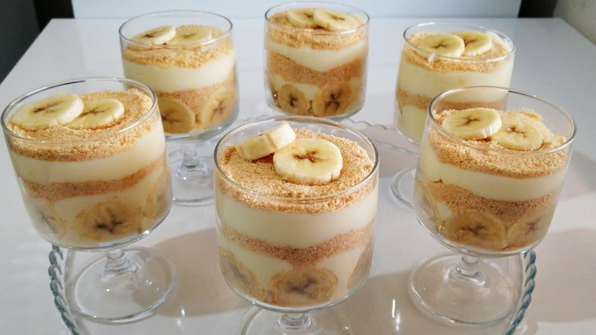

MAGNOLIA PUDING

Description
Magnolia puding is a refreshing and satisfying dessert that is made with a blend of fruits, nuts, and seeds. The puding is typically made by blending the juices of the fruits and seeds, typically at room temperature, and then adding a small amount of water. The puding is then stirred to combine the flavors and textures of the ingredients. Magnolia puding is a great choice for those looking
Ingredients
for 4 or 6 servings
- 4 cups milk
- 1 cup granulated sugar
- 2 tablespoons all-purpose flour
- 2 tablespoons cornstarch
- 1 egg yolk
- 1 teaspoon vanilla extract
- 1 tablespoon butter
- 2-3 bananas, sliced
- 1 package vanilla wafers or ladyfinger biscuits
- Whipped cream (for topping)
Instructions
- Prepare Pudding: In a medium saucepan, whisk together the milk, sugar, flour, and cornstarch until smooth. Cook over medium heat, stirring constantly until the mixture thickens and comes to a gentle boil.
- Add Egg Yolk: In a small bowl, lightly beat the egg yolk. Gradually add a small amount of the hot milk mixture to the egg yolk, whisking constantly to temper the egg. Then, pour the egg yolk mixture back into the saucepan and cook for another 2-3 minutes, stirring constantly.
- Finish Pudding: Remove the saucepan from the heat and stir in the vanilla extract and butter until fully incorporated. Let the pudding cool slightly.
- Layer Pudding: In serving glasses or a large dish, create layers starting with a layer of vanilla wafers or ladyfinger biscuits, followed by a layer of sliced bananas, and then a layer of pudding. Repeat the layers until you reach the top of the dish or glasses.
- Chill: Cover the dish or glasses with plastic wrap and refrigerate for at least 2-3 hours, or until well chilled.
- Serve: Before serving, top with whipped cream and additional banana slices if desired.
Enjoy your Magnolia pudding!
Back to Recipes